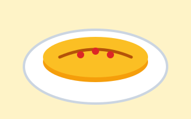

Kaiserschmarrn

Der österreichische Klassiker mit Rosinen und Zwetschkenröster.
Zubereitungszeit: 25 Minuten • Schwierigkeit: mittel
Süßes zum Abschluss – warm, kalt und immer hausgemacht.
Der österreichische Klassiker mit Rosinen und Zwetschkenröster.
Zubereitungszeit: 25 Minuten • Schwierigkeit: mittel

Hauchdünner Teig, viel Apfel und Zimt – der Lieblingsnachtisch der Klasse.
Zubereitungszeit: 90 Minuten • Schwierigkeit: schwer

Dünne Pfannkuchen, schnell gemacht – unser Rezept der Woche.
Zubereitungszeit: 20 Minuten • Schwierigkeit: leicht